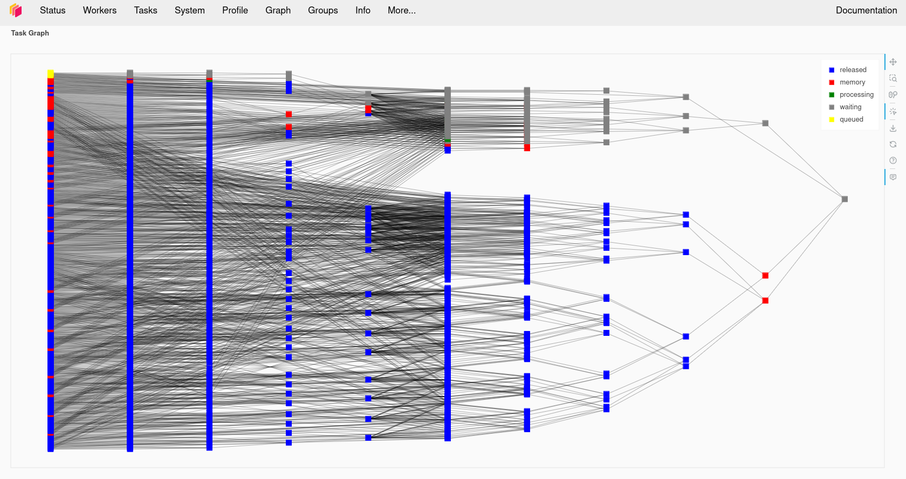
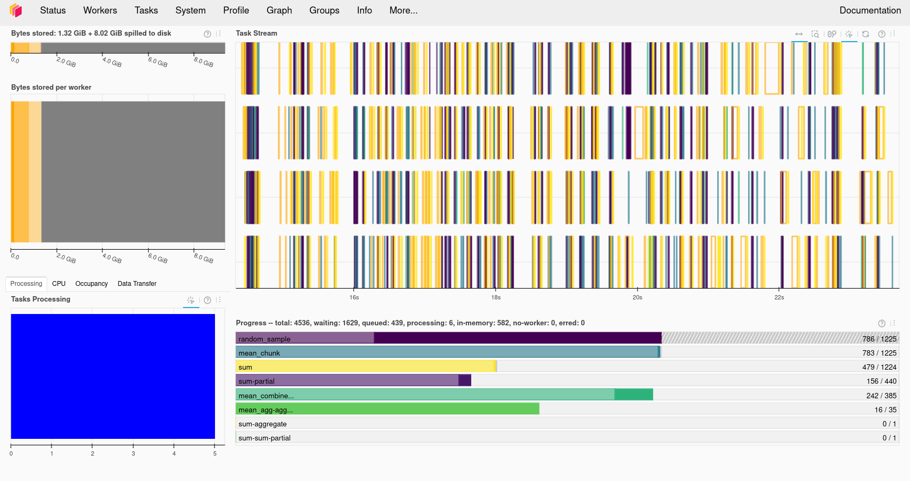

Parallelising with Dask
Overview
Teaching: 50 min
Exercises: 30 minQuestions
How do we setup and monitor a Dask cluster?
How do we parallelise Python code with Dask?
How do we use Dask with Xarray?
Objectives
Understand how to setup a Dask cluster
Recall how to monitor Dask’s performance
Apply Dask to work with Xarray
Apply Dask futures and delayed tasks
What is Dask?
Dask is a Distributed processing library for Python. It enables parallel processing of Python code across multiple cores on the same computer or across multiple computers. It can be used behind the scenes by Xarray with minimal modification to code. JASMIN users can make use of a Dask gateway that allows their Dask code submitted from the Jupyter notebook interface to run on the Lotus HPC cluster. Dask has two broad categories of features, high level data structures which behave in a similar way to common Python data structures but with the ability to perform operations in parallel and low level task scheduling to run any Python code in parallel.
Setting up Dask on your computer
Dask should already be installed in your Conda/Mamba environment. Dask refers to the system it runs the computation on as a Dask “cluster”, although the “cluster” can just be running on your local computer (or the JASMIN notebook server). Later on we’ll look at using a remote cluster running on a different computer, but for now let’s create one on our own computer.
from dask.distributed import Client, progress
client = Client(processes=False, threads_per_worker=4,
n_workers=1, memory_limit='2GB')
client
The code above will create a local Dask cluster with one worker and 4 threads for each worker and a limit of 2GB of memory. Displaying the client object will tell us all about the
cluster.
Using the Dask dashboard
In the information about the Dask cluster is a link to a Dashboard webpage. From the Dashboard we can monitor our Dask cluster and see how busy it is, view a graph of task dependencies, memory usage and the status of the Dask workers. This can be really useful when checking if our Dask cluster is behaving correctly and working out how optimially our code is making use of Dask’s parallelism.


Using the Dask dashboard on JASMIN
Note that if you are using the JASMIN notebook service, the link to the dashboard won’t work as the port it runs on isn’t open to connections from the internet.
ssh-keygen #MAKE SURE YOU SET A PASSPHRASE
cat ~/.ssh/id_rsa.pub >> ~/.ssh/authorized_keys
ssh -R 8787:localhost:8787 login-02.jasmin.ac.uk
Port 8787 might not be the port your Dask cluster is using, make sure the first 8787 is the number your Dask cluster is running on. If anybody else is doing this then port 8787 on login-02 might be in use, change the second 8787 to something else to match. Now connect an SSH tunnel from your computer to Jasmin login-02 and forward port 8787 back to your computer, if you changed 8787 to something else in the previous step then use the same number here in both cases.
ssh -L 8787:localhost:8787 login-02.jasmin.ac.uk
Open your web browser to http://127.0.0.1:8787 and you will see your Dask cluster page. Note that you have just exposed this to anybody else with JASMIN access and there is no password on it.
Dask Arrays
Dask has its own type of arrays, these behave much like Numpy (and Xarray) arrays, but they can be split into a number of chunks. Any processing operations can work in parallel across these chunks. Data can also be loaded “lazily” into Dask Arrays, this means it is only loaded from disk when it is accessed. This can give us the illusion of loading a dataset that is larger than our memory.
Creating a Dask Array
Dask arrays can be created from existing from other array formats including NumPy arrays, Python lists and PandasDataFrames.
We can also initalise a new array as a Dask Array from the start, Dask copies the zeros, ones and random functions from NumPy which initalise an array as all zeros, ones or as
random numbers. For example to create a 10000x10000 array of random numbers we can use:
import dask.array as da
x = da.random.random((10000, 10000), chunks=(1000, 1000))
x
Dask arrays support common Numpy operations including slicing, arithmetic whole array operations, reduction functions such as mean and sum, transposing and reshaping.
y = da.ones((10000,10000), chunks = (1000, 1000))
z = x + y
z
In the above example we added the x and y arrays together, but when we display the result we just get an array getitem in response instead of an actual value. This is because Dask
hasn’t actually computed the result yet. Dask works by building up a dependency graph of all the operations we’re performing, but doesn’t compute anything until we call the compute
function on the final result. Let’s go ahead and call compute on the z object, if we monitor the Dask Dashboard we should see some activity.
result = z.compute()
result
The new variable result will now contain the result of the computation and will be of the type numpy.ndarray.
type(result)
Compare Dask and Numpy Performance
Compare the performance of the following code using Numpy and Dask functions. Use the %%time magic in the cells to find out the execution time. Ensure you only time the core computation and not the Dask cluster setup or library imports, this means you’ll have to write this code into multiple cells. Dask version (note you’ll need to do the Dask client setup first):
import dask.array as da x = da.random.random((20000,20000), chunks=(1000,1000)) x_mean = x.mean() x_mean.compute()Numpy version:
import numpy as np npx = np.random.random((20000,20000)) npx_mean = npx.mean()Which went faster overall? Why do you think you got the result you did? Try making the dataset a little larger, going much beyond 25000x25000 might use too much memory. Try running the
topcommand in a terminal while your notebook is running, look at the CPU % when running the Numpy and Dask versions and compare them. Try changing the number of Dask threads and see what effect this has on the CPU %.
Troubleshooting Dask
Sometimes Dask can jam up and stop executing tasks. If this happens try the following:
- Shutdown the client and restart it.
- Shutdown the kernel of your notebook and rerun the notebook.
Using Dask with Xarray
We previously used Xarray to load our temperature anomaly dataset from the Goddard Institute for Space Studies and performed some computational operations against it using Xarray.
Let’s go and load it again, but this time we’ll give an extra option to open_dataset, the chunk option which allows us to chunk the Xarray data to prepare it for computing with Dask.
The chunk option expects a Python dictionary defining the chunk size for each of the dimensions, any dimension we don’t want to chunk should be set to -1. For example:
import xarray as xr
from dask.distributed import Client
client = Client(n_workers=2, threads_per_worker=2, memory_limit='1GB')
client
ds = xr.open_dataset("gistemp1200-21c.nc", chunks={'lat':30, 'lon':30, 'time':-1})
ds
da = ds['tempanomaly']
da
Here we see that the Dask DataArray da is now chunked every 30 degrees of Latitude and Longitude. We can also specify automatic chunking by using chunks={}, but with such a small
dataset there won’t be any chunking applied automatically.
Any Xarray operations we now apply to the array will now use Dask. Let’s repeat some of our earlier Xarray examples and compute a correction factor to the dataset, if we watch the Dask dashboard we’ll see some signs of activity.
dataset_corrected = ds['tempanomaly'] * 1.1 - 1.0
If we print dataset_corrected we’ll see that it actually contains a Dask array.
print(dataset_corrected)
Dask is “lazy” and doesn’t compute anything until we tell it to. To get Dask to trigger computing the result we need to call .compute on dataset_corrected.
result = dataset_corrected.compute()
result
Low Level computation with Dask
When higher level Dask functions are not sufficient for our needs we can write our own functions and request Dask executes these in parallel. Dask has two different strategies we can use
for this, Delayed functions and Futures. Delayed functions will delay starting until we call .compute at which point all the dependencies of the operation we request are executed.
With futures tasks begin as soon as possible and immediately return a future object that is eventually populated with the result when the operation completes.
Delayed Tasks
To execute a function as a delayed task we must tag it with a dask.delayed decorator. Here is a simple example:
import dask
@dask.delayed
def apply_correction(x):
return x * 1.01 + 0.1
import dask.array as da
x = da.random.random(1_000_000, chunks=1000)
corrected = apply_correction(x)
squared = corrected ** 2
result = squared.compute()
This will call the apply_correction function on each of the 1000 chunks that make up the array x and then square the result. But nothing will execute until we call the compute
function on the last line. Both squared and corrected will have the type of dask.delayed.Delayed until they have been computed.
Visualising the Task Graph
We have already seen that we can visualise the Dask task graph in the dashboard as it is executing. But we can also visualise it inside a Jupyter notebook by calling the visualize
function on a Dask datastructure. We can render this before we call compute if we want to see what is going to happen. This may not always work with larger datasets, our example above
with 1,000,000 elements and 1000 chunks is going to be too big, but if we reduce the size of the array x to 10,000 items instead of 1,000,000 then it will be possible.
@dask.delayed
def apply_correction(x):
return x * 1.01 + 0.1
import dask.array as da
x = da.random.random(10_000, chunks=1000)
corrected = apply_correction(x)
squared = corrected ** 2
squared.visualize()
result = squared.compute()
Futures
An alternative approach to using any function with Dask is to use Dask Futures. These begin execution immediately, but are non-blocking so execution (appears to) proceeds to the next statement while the processing is done in the background. Any objects which are returned by a function will have a Dask future type until the exectuion has completed.
If we want to block until a result is available then we can call the result function. For example taking the code from the last section we can do the following:
import dask.array as da
def apply_correction(x):
return x * 1.01 + 0.1
def square(x):
return x ** 2
x = da.random.random(10_000, chunks=1000)
corrected = client.submit(apply_correction, x)
corrected
squared = client.submit(square, corrected)
squared
squared = squared.result()
squared
If we watch the task activity in the Dask dashboard then we should see activity start as soon as the client.submit calls are made. The squared and corrected variables
will be Dask future objects, if we display them we will see their status as to whether they are finished or not.
When to use Futures or Delayed
The Dask documentation does not have much advice on when it is more appropriate to use Futures or Delayed functions. Some general advice from the forums is to use Delayed functions and task graphs first, but to switch to futures for more complicated problems.
Using the JASMIN Dask gateway
JASMIN offers a Dask Gateway service which can submit Dask jobs to a special queue on the Lotus cluster. To use this we need to do a bit of extra setup. We will need to import
the dask_gateway library and configure the gateway.
import dask_gateway
import dask
gw = dask_gateway.Gateway("https://dask-gateway.jasmin.ac.uk", auth="jupyterhub")
The gateway can be given a set of options including how many worker cores to use, initially we can set this to one and scale it up later. We also need to allocate at least one core as to the scheduler which will manage our Dask cluster. Finally we need to tell Dask which Conda/Mamba environment to use and this needs to match the one we’re running in our notebook.
options = gw.cluster_options()
options.worker_cores = 1
options.scheduler_cores = 1
options.worker_setup='source /apps/jasmin/jaspy/mambaforge_envs/jaspy3.10/mf-22.11.1-4/bin/activate ~/.conda/envs/esces'
Finally we can check if we already had a cluster running and reuse that if we do and then get a client object from the cluster that will behave the same way as the local Dask client
did.
clusters = gw.list_clusters()
if not clusters:
cluster = gw.new_cluster(options, shutdown_on_close=False)
else:
cluster = gw.connect(clusters[0].name)
client = cluster.get_client()
Now that we have a running cluster we can allow it to adapt and scale up and down as we demand it. This will translate to Slurm jobs being launched on the JASMIN cluster itself. JASMIN allows users to spawn up to 16 jobs in the Dask queue, but one of these will be taken by the scheduler so the we can only launch a maximum of 15 workers.
cluster.adapt(minimum=1, maximum=15)
If we now connect to one of the JASMIN sci servers (sci1-8) we can see our jobs in the SLURM queue by running the squeue command.
ssh -J <jasminusername>@login-02.jasmin.ac.uk sci6
squeue -p dask
Once we are done with Dask we can shutdown the cluster by calling its shutdown function. This should cause the jobs in the SLURM queue to finish.
cluster.shutdown()
JASMIN Dask Dashboard
If you display the contents of the client or cluster variable then you will be given an address beginning https://dask-gateway.jasmin.ac.uk that will take you to a Dask
dashboard for your cluster. Unfortunately this server is only accessible within the JASMIN network, to access it you will have to use a web browser running inside an
NoMachine session or port forward via the JASMIN login server.
Challenge
Setup Dask a Dask cluster on JASMIN. Load the GIS temperature anomaly dataset with Xarray and run the correction algorithm on it. Time how long the compute operation takes by using the %%time magic. Experiment with:
- Changing the chunk sizes you use in Xarray
- Changing the number of worker cores
- Changing the number of workers (set in
cluster.adapt)
Key Points
Dask is a parallel computing framework for Python
Dask creates a task graph of all the steps in the operation we request
Dask can use your local computer, an HPC cluster, Kubernetes cluster or a remote system over SSH
We can monitor Dask’s processing with its dashboard
Xarray can use Dask to parallelise some of its operations
Delayed tasks let us lazily evaluate functions, only causing them to execute when the final result is requested
Futures start a task immediately but return a futures object until computation is completed